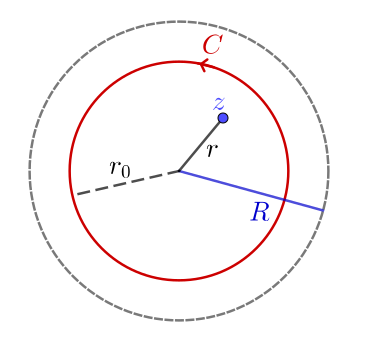

Lecture 30
Let \(f\) be analytic on \(B_R(z_0)\). Then \(f\) has a power series representation on \(B_R(z_0)\): \[ f(z) = \sum_{n=0}^{\infty} a_n\left(z-z_0\right)^n \text{ for } |z-z_0|\lt R, \] where \(a_n\dfrac{f^{(n)}(z_0)}{n!}\), \(n\in \N_0\).
For \(z_0=0\): Maclaurin series
Example: \(f(z) = e^z\), find Maclaurin series.
Answer: Since \(f\) is entire, \(\implies R=\infty\).
\(f^{(n)}(z)=e^z\) for every \(n\) \(\implies f^{(0)}(z)=e^0 = 1 \) for every \(n\).
Previous theorem \(\implies e^z = \displaystyle \sum_{n=0}^{\infty} \frac{1}{n!} z^n\).
Take \(z_0=0\), otherwise translate.
Choose \(z\in B_R\), \(|z|=r\). Fix some \(r_0 \in (r, R)\) and set \(C = C_{r_0}\) positively oriented.
|  |
Cauchy \(\implies\) \[ f(z) = \frac{1}{2 \pi i} \int_C \frac{f(\zeta) d\zeta}{\zeta - z} \quad (1) \] |
Note
\(\dfrac{1}{\zeta - z} = \dfrac{1}{\zeta}\left( \dfrac{1}{1-\frac{z}{\zeta}}\right)\) \(= \dfrac{1}{\zeta}\left( \displaystyle \sum_{n=0}^{N-1}\left( \frac{z}{\zeta} \right)^n + \left( \frac{\left(\frac{z}{\zeta}\right)^N}{1 - \frac{z}{\zeta}} \right) \right)\)
\(\;\;\qquad = \displaystyle \sum_{n=0}^{N-1} \frac{1}{\zeta ^{n+1}} z^n + \frac{z^N}{(\zeta-z)\zeta^N}\)
Multiply by \(\dfrac{f\left(\zeta\right)}{2 \pi i}\) and then integrate over \(C\).
\(\implies \displaystyle \frac{1}{2 \pi i } \int_C \frac{f(\zeta)}{\zeta-z}d\zeta\)
\(\;\;\qquad = \displaystyle \sum_{n=0}^{N-1} \frac{1}{2 \pi i } \int_C \frac{f(\zeta) z^n}{\zeta^{n+1}}d\zeta + \frac{z^N}{2 \pi i } \int_C \frac{f(\zeta)}{(\zeta -z)\zeta^N}d\zeta \)
\((1)\) and the extended Cauchy integral formula \(\implies\) \[ f(z) = \sum_{n=0}^{N-1} \frac{f^{(n)}(0)z^n}{n!} + \rho_{n-1}(z). \]
If we can show that \(\displaystyle \lim_{N\ra \infty } \rho_{N-1} (z) = 0\) we are done.
\(\zeta \in C \implies |\zeta|=r_0\). Suppose exists \(M_N\) such that \[ (H) \quad \left| \frac{f(\zeta)}{(\zeta-z)\zeta^N}\right|\leq M_N \text{ on } C. \]
Then \(\left| \rho_{N-1} (z) \right|\leq \dfrac{r^N}{2 \pi} M_N \cdot \ell(C)\) \(= r_0 r^N M_N\). \(\quad(**)\)
To get \(M_N\): \(f\) is analytic \(\implies |f|\) is continuous, \(C\) is closed and bounded, so by the extreme value theorem \(\exists \;\mu\) such that \(|f|\leq \mu \) on \(C\).
Further \(|\zeta|^N = R_0^N\) and
\(\left| \zeta - z \right|\geq \left| \left| \zeta \right| - \left| z \right|\right|\) \(= r_0-r\).
\(\implies M_N = \dfrac{\mu}{r_0^N(r_0 - r)}\) which suffices for \((H)\).
Hence \((**)\) \(\implies\)
\(\left| \rho_{N-1} (z) \right| \leq \displaystyle \frac{\mu r_0 r^N}{r_0^N (r_0 - r)}\) \(= \displaystyle \frac{\mu r_0}{r_0 - r}\left( \frac{r}{r_0} \right)^N\)
\(\ra 0\) as \(N\ra \infty. \;\square\)
In \(\R\), Taylor series may converge, but fail to converge to the function: c.f. Lecture 16.
Now consider the series expansion \(\sum a_n (z- z_0)^n\).
We can calculate the Radius of convergence \(R\):
Set \(\Lambda = \displaystyle \lim_{n\ra \infty} \left| \frac{a_{n+1}}{z_n} \right|\), then set \(R= \dfrac{1}{\Lambda}\).
\(\Lambda =0 \iff R =\infty \) and \(\Lambda =\infty \iff R=0\).
Example 1: For \(f(z) = e^z\), we have \(e^z = \displaystyle \sum_{n=0}^{\infty} \frac{1}{n!}z^n \)
Then \(\Lambda = \displaystyle \lim_{n\ra \infty} \left( \frac{\frac{1}{(n+1)!}}{\frac{1}{n!}} \right)\) \(= \displaystyle \lim_{n\ra \infty} \frac{1}{n+1}\) \(= 0\).
Thus \(R=\infty\) and \[ e^z = \sum_{n=0}^{\infty} \frac{1}{n!}z^n \text{ on } \C. \quad (*) \]
Example 2: Find Maclaurin series for \(f(z) = z^2 e^{3z}\).
Answer: Since \(f\) is entire, \((*)\) implies \[e^{3z} = \displaystyle \sum_{n=0}^{\infty}\frac{3^nz^n}{n!}.\]
Therefore \(z^2 e^{3z} = \displaystyle \sum_{n=0}^{\infty}\frac{3^nz^{n+2}}{n!}\) \(=\displaystyle \sum_{n=2}^{\infty}\frac{3^{n-2}z^{n}}{(n-2)!}\).